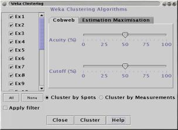

The Weka machine learning package provides four clustering methods, "Cobweb", "Estimation Maximisation", "Simple K-Means" and "Farthest First". For more details on the algorithms used, see the Weka documentation.
The plugin requires the file "weka.jar" which can be downloaded from the Weka web site. The file is distributed in a package called weka-3-4.jar (although newer versions made be available). Unpack this file as per the supplied instructions. Start the Weka Clustering plugin and when it states that it cannot find the Weka classes, pick the "Find" option and use the file chooser to specify the location of the file "weka.jar".
Note: These clustering algorithms can be very time consuming for large datasets. Using the Filter(s) to hide uninteresting Spots before clustering can be very beneficial.

Clustering can be done on either Spots (i.e. finding genes with similar profiles ) or Measurements (i.e. finding experiments or organisms with similar profiles).
Each Measurement is represented with a checkbox. Use these to select which Measurements will be passed to the clustering algorithm.
Apply filter restricts the clustering to the Spots which pass through the current Filter(s).
Two tabs contain the controls for the different clustering algorithms. Consult the Weka documentation for full details.
The clustering process takes place in a separate thread. You can continue to use other features of maxdView whilst the clustering is under way, but take care not to load new data points until the clustering has finshed.